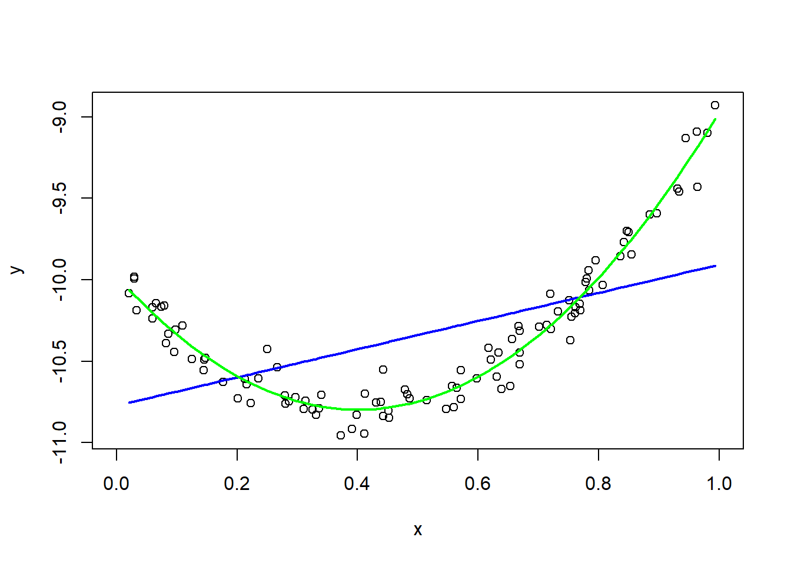
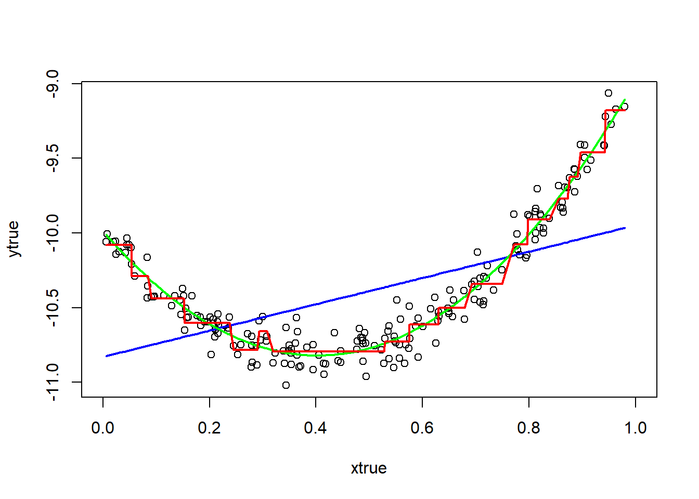
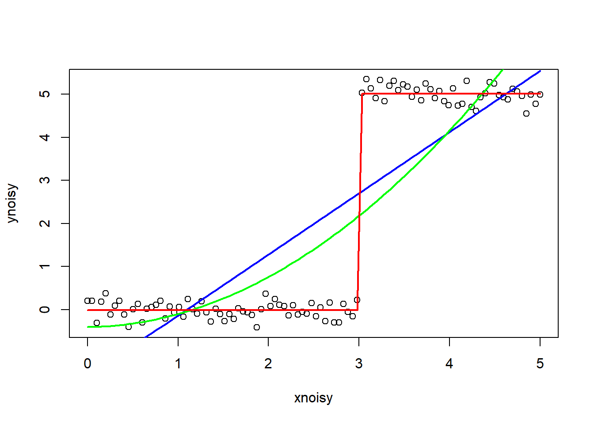

Predicting a known function
Outcomes
- Fit statistical learning models to univariate data
- Plot fitted models
- Interpret models
Instructions
- Answer the following questions, and show all your R code.
- Upload your submission to Canvas in nicely formatted HTML generated from Rstudio.
generating simulated data
Choose n between 30 and 200, and sample n values for x from a random uniform (0, 1) distribution. Define y corresponding to x from the following quadratic function:
\[ y = 5x^2 - 4x - 10 + \epsilon \]
Here ε is normally distributed with mean 0 and standard deviation 0.1. Plot your data.
set.seed(138)
n = 101
x = sort(runif(n))
atrue = 5
btrue = -4
ctrue = -10
y = atrue*(x^2) + btrue*x + ctrue + rnorm(n,sd=0.1)linear model
Use fit1 = lm(y ~ x) to fit a linear model to the data. What mathematical function of x does the fitted model represent? Implement the fitted model as a function in R, and verify that it matches the values predicted by the model.
Hint: you can do something like the following:
x = seq(from = 0, to = 1, by = 0.1)
predict(fit1, data.frame(x))d = data.frame(x, y)
fit1 = lm(y ~ x, data = d)
x1 = seq(from = 0, to = 1, by = 0.01)
with(d, plot(x, y, xlim = c(0, 1)))
lines(d$x, predict(fit1), col = "blue",lwd = 2)
lines(x1, predict(fit1, data.frame(x1)), col = "red", lwd = 2)
The fitted model represents a linear function of x.
quadratic model
Create a new linear model than includes a quadratic x^2 term, for example, using lm(y ~ x + I(x^2)). What mathematical function of x does the fitted model represent?
fit2 = lm(y ~ x + I(x^2), data = d)
with(d, plot(x, y, xlim = c(0, 1)))
lines(d$x, predict(fit2), col = "green",lwd = 2)
lines(x1, predict(fit2, data.frame(x1)), col = "red", lwd = 2)
The fitted model represents a quadratic function of x.
comparing models
Plot lines for the linear and quadratic model together with the data points. Which appears to do a better job fitting the data? Explain.
with(d, plot(x, y, xlim = c(0, 1)))
lines(d$x, predict(fit1), col = "blue",lwd = 2)
lines(d$x, predict(fit2), col = "green",lwd = 2)
lm(y ~ x + I(x^2)) does a better job fitting the data as the curve fits better with data points and minimizes the distance between points and fitted curve.
recursive partitioning
- Fit a recursive partitioning model to the data using
rpart. - Experiment with the parameters of the algorithm by passing different parameters to the algorithm, see
?rpart.control. - Plot and compare two different models from
rpartfor this data set. - Which parameters appear to make the recursive partitioning model fit better or worse on this data set?
library(rpart)
fitrpart1 = rpart(y ~ x + I(x^2), data = d)
fitrpart2 = rpart(y ~ x + I(x^2), data = d,control=rpart.control(minsplit=10, cp=0.001))
fitrpart3 = rpart(y ~ x + I(x^2), data = d,control = rpart.control(minsplit=5, cp=0.00001))
with(d, plot(x, y, xlim = c(0, 1)))
lines(x, predict(fitrpart1), col = "purple",lwd = 2)
lines(x, predict(fitrpart2), col = "green",lwd = 2)
lines(x, predict(fitrpart3), col = "red",lwd = 2)
I think control=rpart.control(minsplit=10, cp=0.001) rpart fits the data points better than the other two. And control = rpart.control(minsplit=5, cp=0.00001) rpart fits better than rpart with no parameters.
test data performance
Simulate more values from the true model
\[
y = 5x^2 - 4x - 10 + \epsilon
\] where x is between 0 and 1.
Compare the performance of three different models (linear, quadratic, and recursive partitioning) on this test set. Which model does the best job minimizing the sum of squared error?
ntrue = 200
xtrue = sort(runif(ntrue))
ytrue = atrue*(xtrue^2) + btrue*xtrue + ctrue + rnorm(ntrue,sd=0.1)
dtrue = data.frame(xtrue, ytrue)
fittrue_line = lm(ytrue ~ xtrue, data = dtrue)
fittrue_curve = lm(ytrue ~ xtrue + I(xtrue^2), data = dtrue)
fittrue_rpart = rpart(ytrue ~ xtrue + I(xtrue^2), data = dtrue, control=rpart.control(minsplit=10, cp=0.001))
with(d, plot(xtrue, ytrue, xlim = c(0, 1)))
lines(dtrue$xtrue, predict(fittrue_line), col = "blue",lwd = 2)
lines(dtrue$xtrue, predict(fittrue_curve), col = "green",lwd = 2)
lines(dtrue$xtrue, predict(fittrue_rpart), col = "red",lwd = 2)
#' Calculate the mean squared error of the model on testdata
#'
#' @param model fitted model object
#' @param testdata data frame containing a column y representing the true values to compare the fitted values against
mse = function(model, testdata)
{
yhat = predict(model, testdata) # Rely on predict to do everything specific to the model.
ytrue = testdata[, "ytrue"]
d2 = (yhat - ytrue)^2
mean(d2)
}test_index = sample(ntrue, size = round(ntrue/2))
dtrain = dtrue[test_index, ]
dtest = dtrue[-test_index, ]
fittrue_line = lm(ytrue ~ xtrue, data = dtrain)
fittrue_curve = lm(ytrue ~ xtrue + I(xtrue^2), data = dtrain)
fittrue_rpart = rpart(ytrue ~ xtrue + I(xtrue^2), data = dtrain, control=rpart.control(minsplit=10, cp=0.001))
mse(fittrue_line, dtest)## [1] 0.1471516mse(fittrue_curve, dtest)## [1] 0.007990803mse(fittrue_rpart, dtest)## [1] 0.01648283Among the three different models (linear, quadratic, and recursive partitioning), the quadratic model fits better. Also, the quadratic model does the best job minimizing the sum of squared error with 0.007990803.
a data set to suit the model
Simulate a slightly noisy data set where the recursive partitioning model should perform much better than the simple linear model. What characteristics of the data make the recursive partitioning model work well? Fit and plot both a linear model and a recursive partitioning model on the same plot for this data to demonstrate that recursive partitioning performs better.
nnoisy = 100
xnoisy = seq(from = 0, to = 5, length.out = nnoisy)
ynoisy = rep(5, nnoisy)
ynoisy[xnoisy < 4] = 0
ynoisy[3 < xnoisy] = 5
ynoisy = ynoisy + rnorm(nnoisy, sd = 0.2)
dnoisy = data.frame(xnoisy, ynoisy)
plot(xnoisy, ynoisy)
fitnoisy1 = lm(ynoisy ~ xnoisy, data = dnoisy)
fitnoisy2 = lm(ynoisy ~ xnoisy + I(xnoisy^2), data = dnoisy)
fitnoisy3 = rpart(ynoisy ~ xnoisy, data = dnoisy)
lines(xnoisy, predict(fitnoisy1), col = "blue",lwd = 2)
lines(xnoisy, predict(fitnoisy2), col = "green",lwd = 2)
lines(xnoisy, predict(fitnoisy3), col = "red",lwd = 2)
dnoisy$ytrue = ynoisy
test_index = sample(nnoisy, size = round(nnoisy/2))
dtrain = dnoisy[test_index, ]
dtest = dnoisy[-test_index, ]
fitnoisy_line = lm(ytrue ~ xnoisy, data = dtrain)
fitnoisy_curve = lm(ytrue ~ xnoisy + I(xnoisy^2), data = dtrain)
fitnoisy_rpart = rpart(ytrue ~ xnoisy, data = dtrain)
mse(fitnoisy_line, dtest)## [1] 2.082254mse(fitnoisy_curve, dtest)## [1] 2.02652mse(fitnoisy_rpart, dtest)## [1] 0.04757409Recursive partitioning model should perform much better than the simpler linear model in data classification and non parametric regression. The recursive partitioning model works well with duplicates, regression trees, etc. Looking at data above, the recursive partitioning model fits better since y is classified as either 0 or 5. Also, the recursive partitioning model does the best job minimizing the sum of squared error.